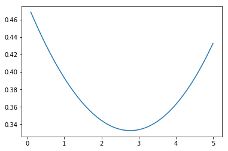

Estimating the parameters of a Lucas Tree: Hansen and Singleton (1982)¶
In [6]:
import pandas as pd
import numpy as np
import pandas_datareader.data as web
import matplotlib.pyplot as plt
import datetime
from scipy.optimize import fsolve
from scipy.optimize import broyden1
from scipy.optimize import minimize
from pprint import pprint
%matplotlib inline
In [7]:
def convert_to_daily_with_ffill(df):
'''convert_to_daily_with_ffill
This method converts a dataframe to have a daily index and forward fills all of the missing days. Useful for converting (for example) stock market data to quarterly data when the quarterly return is wanted.
:param df: a pandas.DataFrame to be converted
:returns: a pandas.DataFrame that has been converted
'''
new_idx = pd.date_range('01-01-1950', '07-01-2018')
df = df.reindex(new_idx)
df = df.fillna(method="ffill")
return df
start = datetime.datetime(1950, 1,1)
end = datetime.datetime(2018, 7, 1)
rpce = web.DataReader('PCECC96', 'fred', start, end)
w5000 = web.DataReader('WILL5000INDFC', 'fred', start, end)
w5000 = convert_to_daily_with_ffill(w5000)
gdef = web.DataReader('GDPDEF', 'fred', start, end)
tb = web.DataReader('TB3MS', 'fred', start, end)
df = pd.DataFrame(columns=['rpce', 'w5000', 'tb', 'gdef'], index = rpce.index)
df['rpce'] = rpce
df['w5000'] = w5000
df['gdef'] = gdef
df['inf'] = df['gdef']/df['gdef'].shift(1)
df['w5000_d'] = df['w5000']/df['inf'] # Deflated asset price returns
df['R'] = df['w5000_d'].shift(-1)/df['w5000_d'] # Returns to asset prices
df['tb'] = tb/100. + 1 # Convert to percentage and make a gross return
df = df.dropna(axis=0) # Drop NaNs
df.head(10)
Out[7]:
| rpce | w5000 | tb | gdef | inf | w5000_d | R | |
|---|---|---|---|---|---|---|---|
| DATE | |||||||
| 1971-01-01 | 2968.902 | 1.00 | 1.0444 | 23.536 | 1.015270 | 0.984959 | 1.122320 |
| 1971-04-01 | 2996.124 | 1.12 | 1.0386 | 23.846 | 1.013171 | 1.105440 | 1.011948 |
| 1971-07-01 | 3020.036 | 1.13 | 1.0540 | 24.088 | 1.010148 | 1.118647 | 0.992965 |
| 1971-10-01 | 3070.230 | 1.12 | 1.0446 | 24.288 | 1.008303 | 1.110777 | 1.046124 |
| 1972-01-01 | 3110.801 | 1.18 | 1.0338 | 24.664 | 1.015481 | 1.162011 | 1.077729 |
| 1972-04-01 | 3170.159 | 1.26 | 1.0371 | 24.815 | 1.006122 | 1.252333 | 1.004674 |
| 1972-07-01 | 3219.095 | 1.27 | 1.0398 | 25.048 | 1.009389 | 1.258186 | 1.020280 |
| 1972-10-01 | 3294.606 | 1.30 | 1.0474 | 25.366 | 1.012696 | 1.283703 | 1.070357 |
| 1973-01-01 | 3354.764 | 1.39 | 1.0541 | 25.661 | 1.011630 | 1.374020 | 0.917591 |
| 1973-04-01 | 3353.357 | 1.28 | 1.0626 | 26.052 | 1.015237 | 1.260789 | 0.918401 |
In [8]:
class GMMEstimator_q1(object):
"""A GMM Estimator for question 1"""
def __init__(self, df):
self.df = df
self.beta = 0.99 # Since we are not changing this,
# I make it an instance property from the start.
def calculate_m(self, gamma):
'''Define the SDF given values for beta and gamma'''
self.df['m'] = self.beta*(self.df['rpce'].shift(-1)/self.df['rpce'])**(-gamma)
#self.df = self.df.dropna(axis=0).copy()
def objective(self,gamma):
'''The objective to be minimized.'''
self.calculate_m(gamma) # Calculate the SDF given gamma
df = self.df.copy().dropna(axis=0)
l = df.shape[0]
df['ip'] = (1/l)*(df['m']*df['R'] - 1)
return np.dot(df['ip'].values, df['ip'].values)
def estimate(self, init):
'''Estimate values for beta and gamma'''
s = minimize(self.objective, init, tol=1e-10 )
print(s)
e = GMMEstimator_q1(df)
e.estimate(100.0)
fun: 3.1866964156783745e-05
hess_inv: array([[993634.27128949]])
jac: array([4.54747351e-13])
message: 'Optimization terminated successfully.'
nfev: 57
nit: 11
njev: 19
status: 0
success: True
x: array([3.76150208])
In [9]:
class GMMEstimator_q3(object):
def __init__(self, df):
self.df = df
self.beta = 0.99 # Since we are not changing this, I make it an instance property from the start.
def calculate_m(self, gamma):
'''Define the SDF given values for beta and gamma'''
self.df['m'] = self.beta*(self.df['rpce'].shift(-1)/self.df['rpce'])**(-gamma)
def objective(self,gamma):
self.calculate_m(gamma)
#print(self.df)
#cov = self.df[['m', 'R']].cov()['R']['m']
#ER = self.df['R'].mean()
#Em = self.df['m'].mean()
self.df['inv_m'] = 1/self.df['m']
self.df['diff'] = (self.df['tb'] - self.df['inv_m'])**2
new_df = df.dropna(axis=0)
ob = new_df['diff'].values
#cov = df[['m', 'R']].cov()["R"]['m']
#ER = df['R'].mean()
#Em = df['m'].mean()
return np.sum(ob)
def estimate(self, init):
'''Estimate values for beta and gamma'''
#s, info, ier, msg = fsolve(self.objective, init, full_output=True)
s = minimize(self.objective, init)
pprint(s)
def plot(self, min_value, max_value):
ar = np.linspace(min_value, max_value, 100)
out = [ self.objective(aa) for aa in ar]
plt.plot(ar, out)
plt.show()
e = GMMEstimator_q3(df)
e.plot(0.1, 5.0)
e.estimate(2.5)

{'fun': 0.33268058450798116,
'hess_inv': array([[25.47909069]]),
'jac': array([-1.86264515e-08]),
'message': 'Optimization terminated successfully.',
'nfev': 18,
'nit': 4,
'njev': 6,
'status': 0,
'success': True,
'x': array([2.7733041])}
In [13]:
class GMMEstimator_q4(object):
def __init__(self, df):
self.df = df
def calculate_m(self, params):
'''Define the SDF given values for beta and gamma'''
beta, gamma = params
self.df['m'] = beta*(self.df['rpce'].shift(-1)/self.df['rpce'])**(-gamma)
def objective(self,params):
'''The function to be minimized.'''
self.calculate_m(params)
#print(self.df)
#cov = self.df[['m', 'R']].cov()['R']['m']
#ER = self.df['R'].mean()
#Em = self.df['m'].mean()
self.df['inv_m'] = 1/self.df['m']
self.df['diff'] = (self.df['tb'] - self.df['inv_m'])**2
new_df = self.df.dropna(axis=0)
ob = new_df['diff'].values
ob1 = np.sum(ob)
l = new_df.shape[0]
df = new_df.dropna(axis=0).copy()
df['ip'] = (1/l)*(df['m'].dot(df['R']) - 1)
ob2 = np.dot(df['ip'].values, df['ip'].values)
#cov = df[['m', 'R']].cov()["R"]['m']
#ER = df['R'].mean()
#Em = df['m'].mean()
return ob1 + ob2
def estimate(self, init):
'''Estimate values for beta and gamma'''
#s, info, ier, msg = fsolve(self.objective, init, full_output=True)
s = minimize(self.objective, init, tol=1e-8)
pprint(s)
def plot(self, min_value, max_value):
ar = np.linspace(min_value, max_value, 100)
out = [ self.objective(aa) for aa in ar]
plt.plot(ar, out)
plt.show()
e = GMMEstimator_q4(df)
e.estimate([0.7, 50.0])
b = np.linspace(0.01, 1.0, 20)
g = np.linspace(0.01, 20.0, 50)
bg = np.array
grid = np.meshgrid(b,g)
print(grid[0].shape, grid[1].shape)
params = []
idx = []
{'fun': 123.00641288916736,
'hess_inv': array([[ 0.00035324, -0.00069736],
[-0.00069736, 0.00324237]]),
'jac': array([-2.47955322e-05, 0.00000000e+00]),
'message': 'Desired error not necessarily achieved due to precision loss.',
'nfev': 85,
'nit': 14,
'njev': 21,
'status': 2,
'success': False,
'x': array([0.70945192, 0.70185419])}
(50, 20) (50, 20)